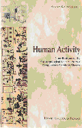

|

|
| BOOK AND SOFTWARE REVIEWS | ||||
Karpatschof, B. Human activity - contributions to the anthropological sciences from a perspective of activity theory. Copenhagen: Dansk Psykologisk Forlag, 2000. vii, 513 p. ISBN 87-77063-112 [Now out of print and available only at the Web sites noted in the review.]
It is with very great pleasure that I hereby make this book freely available on the Internet for everyone interested in activity theory and related subjects such as cognitive science, ontology, theory of knowledge, meaning theory and semiotics, metascience and, not least, the important internal connections among these fields.
I believe that the field of information science needs to be better informed by the subjects discussed in this book. The fields covered are necessary if we are to base our field on clear thinking and not on theoretically-confused understanding. In one form or another, such issues should be taught in courses on information science, information management, library and information science or whatever label is used.
The book is a product of the Danish psychological research culture, of which activity theory has been one important part. The author is a statistician by training (M.Sc. in statistics) teaching the methodology, philosophy and history of psychology at the University of Copenhagen. He is a highly-regarded member of the Danish research community in psychology and has for many years been on the editorial board of Psyke & Logos, of which he is a co-founder, and which is probably the leading journal in Danish psychology.
The present book is his doctoral dissertation, which should not be confused with a Ph.D. thesis. Some countries, including Denmark, have had, for many years, doctoral dissertations, which are typically the work of senior scholars. In recent years the Ph.D. has also become established, with the dissertation being the work of junior researchers and with lower prestige than the older, doctoral dissertattion. This book is the product of many years work.
The book has in my opinion the qualities that characterize really great books:- it is about fundamental problems;
- it is based on a close study of the classics as well many important modern scientists;
- it is interdisciplinary;
- it is based on a consciously chosen theoretical framework;
- the chosen theoretical frame is consistently applied throughout the book;
- it is original and independent;
- the author has been thinking about the writings upon which he has based his own opinion; and
- the author's views are integrated with the main theories, and provide a clear and well-explained view of his own (with many examples and illustrations).
One criticism, however, may be that the book is sometimes too sketchy (which is understandable considering its wide scope).
A student who was recommended to read this book once asked: "But a dissertation is perhaps not the best introduction to a field?" Well, the issues discussed in this book are very often seriously confused in the literature. I believe that students waste much time by reading unclear books and articles, be they introductory or not. If a field is notoriously unclear it is the clarity of the arguments that is decisive for the readability of the text rather than whether one is a member of the intended target group. So yes, it can be used also for advanced students, but should of course not be the only text read on these topics.
When the reader finds out that the book is based on Marxist theory, I fear that he or she will immediately lose interest. This would be very unfortunate. Most points in this book are in agreement with a pragmatic philosophy and not necessarily associated with a Marxist attitude. (The relation between Activity theory and American pragmaticism is neglected in this book as it also generally was during the Cold War). I believe activity theory owes more to the American philosopher and psychologist John Dewey than the official sources have revealed. Also it should be noted that Leont'ev, a leading figure in activity theory, has been influential, both in different versions of Marxism (e.g., with critical psychology associated with Holzkamp in Berlin and with a more traditional form of Marxism) and among people who do not associate themselves with Marxism, who perhaps should be labelled anthropological psychologists because they emphasize the role of culture in cognitive processes. My own application of this theory as a frame for information science (Hjørland, 2002) is also an example of what this theory can offer without involvement of Marxism.
When this is said, I would like quote from the book, revealing the author's relation to Marxism:
This wave of information technology has a built-in tendency to crush the propensity toward equality as expressed in the ideology of enlightenment and of socialism, and in the evolution of democracy, public health, welfare and education. This anti-egalitarian tendency is a consequence of the devalorisation of common labour and the need for exceptional talent.
In 1982, shortly after the announcement of Japan's so-called fifth generation of computers, I began to see this change. I witnessed the crumbling of values that were established by the rise of the working class and consequently similar decline of the values associated with the now weakened movement of socialism. And in the end, the Marxist theory of history and society, which had been a personal foundation for most of my life, was also in decline. This was one of the factors delaying the present book. However, since then I have developed increasing confidence in the now generally discarded material conception of history. I realised that the prediction of the present cultural change, including the present low degree of interest in Marx, was itself produced by a Marxist method. Furthermore, for more than l5 years the prediction has proved to be correct to a degree that has often sent shivers down my spine. (p. 417).
Whether or not the reader shares the author's political views and confidence in the Marists method of analysis, the book is an important text for answering many questions which traditional currents in cognitive science and analytical philosophy have confused rather than clarified.
The book is organized in six chapters:
- Prologue
- Part I: Foundation of activity theory
- Part II: Theory of knowledge
Although I do not think that I agree with everything in this book, but I consider it an important source to consult whenever deep issues are addressed, such as the nature of meaning and concepts. Karpatschof's views are often refreshingly clear as his view on essentialismnote, which is in conflict with today's tendency towards anti-essentialism and view that what we term "natural kinds" are just kinds of social constructions. He writes:
Aristotle has been proven correct in his belief in the existence of natural kinds in the cosmological as well as in the biological field.
We have even found the essential qualities defining these kinds. In the case of elements, it is the atomic structure (primarily the number of protons), and in the case of species, it is the structure of the chromosomes (primarily their number and the sites of their genes) (p. 356). note
I shall not go deeper into this book now. It has served well my understanding of the concept of information, as demonstrated in Hjørland (2002). I believe that activity theory is important simply because most other psychological and cognitive theories have ignored the important role that culture, society and specialization play for the development of human psychology and humans' relation to information. My understanding of information science has also been served by other publications on activity theory, such as Leont'ev (1981), who provided the basis for stages of biological and cultural development in information processing mechanisms. A point of view of activity theory is that meaning (e.g., word meaning) is related to standardized practices in human societies. This point of view is important for information science (and more specific and useful than Wittgenstein's relation of meaning to use). This point of view is not made clear in the present book. Nonetheless, it is a very rich source and very relevant for information science.
The book was published in 2000 by Danish Psychological Publisher, which is a publisher without experience in international publishing. I tried to serve as a consultant and made a long list of journals and libraries, to which I recommended to send the book. Today I can see, that the book is not even in the catalogue of the British Library, so my advice has not been followed. The few citations in the citation databases are mainly due, directly or indirectly, to my own efforts. A few months ago, the author informed me that the publisher had decided to destroy the remaining copies because of low demand. I tried to get hold of some of them, but most were already destroyed. At first, I was shocked, but after a while, I saw this as an opportunity to scan the book and make it available to the intellectual world on the Internet (the publisher evidently had no further economic interests in it). And here it is with the permission of the author and copyright-owner for free use. I regard this job as the most useful way I could possibly spend my time serving information science (as well as other fields). I really think the word gift is well used for what serious researchers get by having access to this book. My hope is that it will be used and discussed and that this process of theoretical clarification may serve our field and all of us.
Notes
1. "Essentialism is the belief and practice centered around a philosophical claim that for any specific kind of entity it is at least theoretically possible to specify a finite list of characteristics, all of which any entity must have to belong to the group defined. A member of a specific kind of entity may possess other characteristics that are neither needed to establish its membership nor preclude its membership." (Wikipedia)
2. The opposite view is defended by, for example, Bryant (2000).
References
- Bryant, R. (200). Discovery and decision: exploring the metaphysics and epistemology of scientific classification. Madison, NJ: Fairleigh Dickinson University Press.
- Hjørland, B. (2002). Principia informatica. Foundational theory of information and principles of information services. In, Harry Bruce, Raya Fidel, Peter Ingwersen, and Pertti Vakkari, (Eds.). Emerging frameworks and methods. Proceedings of the Fourth International Conference on Conceptions of Library and Information Science (CoLIS4). (pp. 109-121) Greenwood Village, CO: Libraries Unlimited.
- Leont'ev, A. N. (1981). Problems of the development of the mind. [Translated from Russian]. Moscow: Progress. (Originally published 1940)
Professor Birger Hjørland
Royal School of Library and Information Science
Copenhagen, Denmark
August, 2006
Editor's note
In addition to being available on the Information Research site, the book is also available on Professor Hjørland's site, The knowledge organization lifeboat
How to cite this review
Hjørland, B. (2007). Review of: Karpatschof, B. Human activity - contributions to the anthropological sciences from a perspective of activity theory. Copenhagen: Dansk Psykologisk Forlag, 2000. Information Research, 12(3), review no. R261 [Available at: http://informationr.net/ir/reviews/revs261.html]